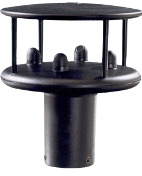

Fundamentos, arquitetura e domínio da medição ultrassônica.
Velocidade do vento8,4 m/s
CondiçãoOPERAÇÃO SEGURA
DireçãoNW 312°
TECNOLOGIA ULTRASSÔNICA · MVP EM FASE DE ESCALA
Decisões melhores começam com dados de vento confiáveis.
Soluções completas que transformam medições de vento em informação acionável para operações mais seguras, eficientes e inteligentes.
MVP desenvolvidoTecnologia consolidada
Domínio tecnológicoDesenvolvimento próprio
Próxima etapaIndustrialização & escala
◈ Mais segurança
↗ Mais eficiência
◉ Dados em tempo real
NOSSA JORNADA
Da pesquisa ao MVP.
Da pesquisa ao MVP.
Agora, rumo à escala.
A tecnologia ConnSensy evoluiu por ciclos de desenvolvimento, prototipagem e ensaios até alcançar um MVP e o domínio tecnológico necessário para fabricar o produto. A próxima etapa é transformar essa maturidade técnica em escala.
Gerações sucessivas para aprender, testar e evoluir a solução.
Experimentação e evolução em ambientes de teste cada vez mais controlados.
Produto em estágio avançado, com tecnologia dominada para fabricação.
ESTÁGIO ATUALIndustrialização, mercado e crescimento da capacidade de entrega.
PRÓXIMA ETAPA
PRÓXIMO CAPÍTULO
Estamos preparando a ConnSensy para escalar.
Buscamos parceiros de industrialização, aplicação, integração e investimento para transformar maturidade tecnológica em produto, mercado e crescimento.
Converse com a ConnSensy →
ConnSensy
TECNOLOGIA DE PONTA
Conheça o produto →
Anemômetro Ultrassônico 2D
Tecnologia ultrassônica sem partes móveis para medição de velocidade e direção do vento, evoluída por sucessivas gerações de protótipos e consolidada em um MVP com domínio tecnológico para fabricação.
Sem partes móveisMaior confiabilidade
Ultrassônico 2DVelocidade e direção
Comunicação digitalPronto para integração
Resposta rápidaDados em tempo real
Robusto e confiávelAmbientes exigentes
IntegrávelOEM e soluções verticais
SOLUÇÕES
Tecnologia que resolve problemas reais.
Mais do que medir vento: aplicações construídas a partir de contexto, integração e decisão.
Crane Safety
SEGURANÇA
Crane Safety
Monitore o vento em tempo real e evite operações em condições inseguras.
Saiba mais →Smart Spraying
AGRO
Smart Spraying
Identifique a melhor janela de pulverização e reduza perdas por deriva.
Saiba mais →Port Operations
PORTOS
Port Operations
Monitoramento distribuído, alertas e histórico para operações portuárias.
Saiba mais →Wind Farm Monitoring
ENERGIA EÓLICA
Wind Farm Monitoring
Dados independentes de vento para monitoramento e análise de desempenho de parques eólicos.
Saiba mais →
VISÃO DE FUTURO
Da medição à
Da medição à
inteligência.
O anemômetro é o ponto de partida. A tecnologia ConnSensy abre caminho para uma evolução além da medição, conectando dados, contexto e inteligência para apoiar decisões operacionais.
Possíveis evoluções
Monitoramento remoto · Alarmes · Histórico · Mapas de vento · Analytics
Medição confiável do vento.
→
Dados disponíveis para a aplicação.
→
Combinação de informação e histórico.
→
Inteligência aplicada à operação.
CRESCER JUNTOS
Tecnologia pronta para
Tecnologia pronta para
encontrar escala e mercado.
Com o MVP em estágio avançado e o domínio tecnológico consolidado, buscamos construir o ecossistema necessário para a próxima etapa: industrialização, validação em aplicações reais, integração e escala.
Industrialize
Transformar o MVP em um produto preparado para fabricação em escala.
Indústria / Supply ChainValidate
Levar a tecnologia para aplicações reais e construir casos de uso relevantes.
Early adopters / PilotosIntegrate
Incorporar nossa tecnologia a produtos, plataformas e soluções existentes.
OEM / IntegradoresScale
Acelerar industrialização, acesso ao mercado e crescimento.
Investimento / Parcerias estratégicas
DO MVP À ESCALA
Procuramos mais do que capital.
Queremos conexões que agreguem capacidade industrial, acesso a mercado, conhecimento de aplicação e recursos para acelerar a próxima fase da ConnSensy.
Vamos conversar →CONNSENSY
We turn sensing into intelligence.
Transformamos conhecimento em sensoriamento e instrumentação em soluções para aplicações reais. Nosso primeiro produto nasce da medição ultrassônica de vento e de uma trajetória que já alcançou o estágio de MVP.
VAMOS CONVERSAR?
Aplicações, parcerias e escala.
Queremos conversar com clientes, parceiros tecnológicos e conexões estratégicas para a próxima etapa da ConnSensy.